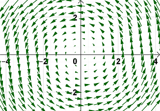
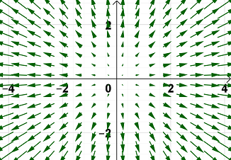
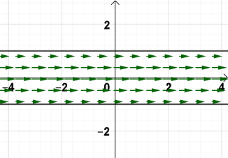

Vector Fields
A vector field in \(ℝ^2\) is a function defined over a region \(D\) in the \(xy\)-plane that assigns to each point \((x, y)\) in \(D\) a vector \(\vec{F}(x, y)\).
| Vector Field | Graph |
|---|---|
|
Rotation Vector Field \(\vec{F}(x,y) = \langle -y, x \rangle\) A rotation vector could be used to describe the flow of water in a sink around the drain. |
 |
|
Radial Vector Field \(\vec{F}(x,y) = \langle x, y \rangle\) A radial vector field could be used to describe a repulsive (or attractive) force, where all vectors point outward (or inward) from (to) a central point. |
 |
|
Flow Vector Field \(\vec{F}(x,y) = \langle \frac{1}{y2 + 1}, 0 \rangle\) A flow vector field could be used to describe the flow of a fluid through an object, such as water through a hose or blood through a vein, or even traffice flow on a road. |
 |
Similarly, a vector field in \(ℝ^3\) is a function defined over a region \(E\) in space that assigns to each point \((x,y,z)\) in \(E\) a vector \(\vec{F}(x,y,z)\). Such a vector field could describe the air current across an airplane wing or in a huricane, the radiation of heat from a light source or the temperature fluxuation in a solid, or a gravitational, magnetic, force, or energy field.
A gradient field is a vector field defined by the gradient of a scalar function \(f\). In other words, in \(ℝ^2\) and in \(ℝ^3\), respectively, we get the following.
\[\vec{F}(x,y) = \nabla f(x,y) = \langle f_x(x,y), f_y(x,y)\rangle\] \[\vec{F}(x,y,z) = \nabla f(x,y,z)\]What makes gradient fields so special is that since the vectors in the field are all gradient vectors, they will all be orthogonal (or perpendicular) to the level curves of the contour map of the function \(f\). This is illustrated in the following video.
We say a vector field \(\vec{F}\) is conservative if it is the gradient of some scalar function \(f\). In other words, there is some scalar function \(f\) such that \(\vec{F} = \nabla f\) and we call \(f\) the potential function for \(\vec{F}\).